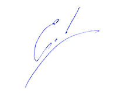

Как писать увлекательные [и продающие] статьи?

Задавали ли Вы себе когда-нибудь вопрос: "Как написать гениальную статью?" Не когда-нибудь в будущем, а сейчас - сесть и написать, имея просто идею. За пару-тройку часов. И чтобы читатель не мог оторваться от нее до последней точки, а потом еще отправил ссылку другу и скопировал себе в блог.
... Нет, это все мелочи, правда? Другое дело, когда Вас узнают по Вашим статьям в офлайне, предлагают сотрудничество крупные компании, а восторженные читатели пишут Вам и говорят "Спасибо!" ;)
Вы мечтали когда-нибудь быть известным автором? Порхающими пальцами создавать магию в сознании тысяч людей! Увлекать читателя в полет Вашего воображения...
А быть гениальным копирайтером, чьи тексты монетизируют все, о чем бы Вы не рассказывали в них? Да еще и не продавая ничего напрямую!
А что на самом деле?
Ваши статьи читают, но без огонька? То есть, мало, редко, не до конца и не все? И, может быть даже, кто-то говорил Вам, что "это посредственность". Или еще добрее: "Займись-ка ты лучше чем-нибудь другим, друг". Бывало? И, наверно, Вам приходили мысли, что писательство - это не Ваше?
Умом Вы понимаете, что просто не знаете что-то. Или не до конца умеете... Но в душе, наверно, чувствуете себя так, словно Вы открылись, а по Вам прошлись сапогами. И хочется закрыться, и никогда больше не писать. Но что делать, если Вам нравится писать?! Или просто нужно для работы?
Отказаться от этого только потому что Вы не знаете, как писать красиво? Как зацепить внимание читателя? Как увлечь его в свое путешествие? Вы догадываетесь, что, наверно, это как-то можно сделать... Вот только как?
Хотите узнать "волшебную" формулу?
Должна же быть какая-то формула мастерства, которой владеют все гениальные писатели? Или какие-то особые приемы, с помощью которых копирайтеры умудряются превратить "сухую" информацию в "эксклюзивную конфетку"? И наверняка самые популярные блоггеры и знаменитые авторы знают их или нащупали интуитивно...
На этих строках Вы, наверно, уже догадываетесь, что это не "волшебный дар" (потому что волшебный дар в той страсти к перу, которая уже горит в Вас!), а конкретная техника. Техника создания увлекательнейших статей, которой можно научиться!
Принципально новый подход к тому, как писать статьи!
Изучая НЛП, я узнал про особое состояние, в котором мы находимся на пике своего творчества, а наш разум работает очень легко и в несколько раз эффективнее. Однако, для того чтобы писать в этом состоянии, нужно создать определенные условия...
Я тогда как раз начал расручиваться как тренер с помощью статей. Специально для себя я разработал специальную технику письма "в потоке". Используя ее, я раскрутил свой сайт до 20.000 посетителей в месяц и набрал 27.000 подписчиков в рассылках. Исключительно за счет статей. Без SEO и прочих методов "хитрой раскрутки". Тренерский график заполнился на год вперед. А когда статьи создали достаточную известность, одно из крупных издательств предложило мне выпустить книгу...
Я моделировал всех авторов, которые мне нравились, а кое-каким вещам специально обучался у мастеров. И за шесть лет моя простая техника стала целой технологией писательства. Весной 2010 года я провел интернет-тренинг, обучающей этой технологии. В ходе него 79 человек написали свои самые лучшие статьи! Кто-то вообще с нуля, а кто-то - значительно повысив свое мастерство. Применение НЛП в писательстве оказалось просто прорывом!
Вы тоже можете овладеть этой технологией и писать легко, красиво и с удовольствием! Я переработал материал вебинара для самостоятельного обучения и сделал электронный тренинг. С его помощью Вы напишите свою самую лучшую статью. И это будет только начало!
Электронный тренинг "Как писать увлекательные статьи?"
|
|
Записаные "в живую" аудио-лекции создают ощущение обучения в группе. Методичка с картами уроков сделает изучение материала удобным и легким. А подробный разбор всех возможных вопросов от новичков и мастеров создаст для Вас полную ясность в этой науке. Все что Вам нужно - это желание и компьютер с CD-ROM!
|
Чем интересен автор тренинга?

Егор Булыгин - автор книги "НЛП как оно есть. Практика успеха" и более сотни статей, многие из которых размещены на сайте nlping.ru. А также, M.A. NLP, сертифицированный коуч и сертифицированный тренер НЛП (Международный Эриксоновский Университет, Канада). Тренерский стаж 7 лет.
В 2005-2008 году с помощью статей раскрутил свой сайт и создал себе известность в НЛП сообществе. Благодаря чему набрал читательскую аудиторию в несколько десятков тысяч человек и начал вести свои авторские тренинги в крупнейших городах России. Профессионально пишу статьи 9 лет.
Вам нужен этот тренинг, если:
- Если Вы никогда не писали статьи и хотите научиться сразу делать это правильно и красиво.
- Если Вы уже пишете, и хотите значительно повысить свое мастерство и выйти на новый уровень.
- Если Вы пишете статьи для продвижения себя как психолога/тренера/коуча/другого специалиста, и для Вас крайне важно качество Ваших статей.
- Если Вы пишете хорошо, но долго, и хотите научиться писать быстро и легко. И так же быстро и легко редактировать статью.
- Если Вы пишете в одном жанре, и хотите научиться писать в других (увлекательное чтиво, методическая или техническая статья, продающая или рекламная статья).
- Если Вы хотите уметь не только красиво писать, но и давать Вашим читателям нечто большее...
Вам не нужен этот тренинг, если:
Если Вы не любите писать. Даже если Вам это очень нужно для работы, но ни малейшего желания писать у Вас нет - тренинг Вам не поможет. Без желания и удовольствия творчеству научиться невозможно.
А также ПОДАРКИ для Вас!!!
Чтобы Ваши результаты были еще выше, вместе с этим тренингом мы дарим Вам еще несколько!
Аудио урок: "Где брать новые темы для вдохновения?"
Аудио урок "Как создавать цепляющие заголовки?"
Аудио урок "Пять инструментов по привлечению читателей"
Любовь и создание гармоничных отношений
(архив занятий мастер-группы)

Отножения МЖ и бизнес
- Как связаны эти вещи, и почему одно влияет на другое?
- Три ключевых принципа гармоничных отношений.
Внутренний мужчина и внутренняя женщина
- Как развивать в себе мужественность и женственность? Откуда "ноги" растут?
- Женская и мужская энергия в каждом из нас - как с ней правильно обращаться?
- Работа с энергиями Инь и Ян.
- Тренировочные задания: Учимся замечать в себе проявления иньской и янской энергий и развивать их.
Задание для продвинутых: Трансформируем негативные проявления иньской и янской энергии.
Секс и деньги
- Как связаны секс и деньги и как развить в себе эти энергии. Архетип Шлюхи.
- Техника развития энергий, привлекающих секс и деньги.
- Техника "ПЖС".
- Фреймы, рамки и ограничения, мешающие нам жить полной жизнью. Как с ними бороться?
- Как развивать в себе мастерство?
- Тренировочные задания: Прокачиваем энергии секса и денег.
Как определить своего партнера?
(Не слушайте этот каст, если Вы не уверены в прочности Ваших текущих отношений - после него они могут развалиться.)
- Как устроены системы и почему изменения в отношениях создают самые большие изменения в жизни?
- Что такое "любовь к себе" и как ее обрести?
- Что самое главное в отношениях?
- Для чего нам даны половые отношения, какие ресурсы в них есть и как мы можем их использовать?
- Тренировочные задания: Развиваем любовь к себе.
Поиск своего партнера
Философия и конкретные практические рекомендации по поиску своего партнера.
(Ведет занятие тренер по отношениям Антон Маторин).
Как управлять общением с помощью эмоциональных качелей?
- Тренерский секрет про обратную связь.
- Иллюзия, в которой мы живем и как выйти за рамки?
- Как учиться в несколько раз эффективнее?
- Как управлять общением с помощью эмоциональных качелей (техника, обычная и продвинутая версии).
- Как найти общий язык с детьми?
- Манипуляция - где истина?
Это абсолютно эксклюзивная коллекция материала. Его невозможно купить или скачать в архиве мастер-группы. Вы получаете его в подарок вместе с этим тренингом!
Стоимость
5800 руб. - электронная версия, доставка через интернет.
Электронный архив Вы можете скачать сразу после зачисления платежа. Ссылка будет отправлена на Ваш е-мейл автоматически.
Гарантии
Если Вам не понравится приобретенный тренинг по любой причине, мы вернем Вам деньги по первому Вашему требованию. Сразу и без лишних разговоров. При этом, все материалы Вы можете оставить у себя.
Для доставки тренинга нам необходимо знать Ваши контактные данные. Вся информация о Вас будет защищена и недоступна для третьих лиц.
Автор тренинга и управляющий проектом
Егор Булыгин
|
Купить
|